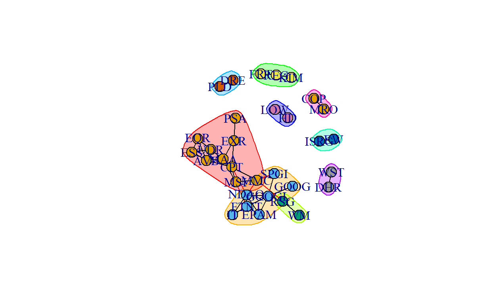
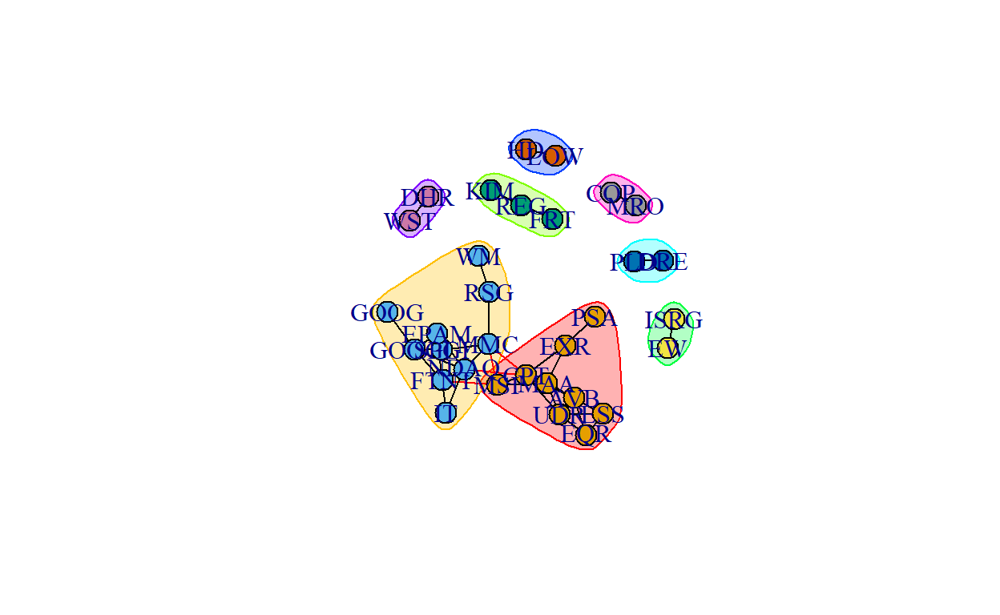
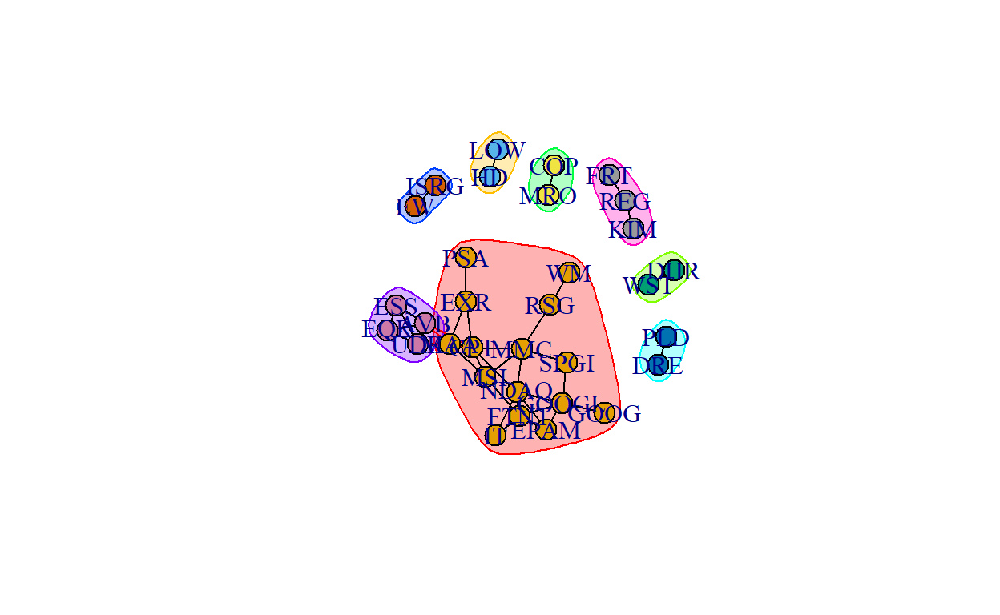
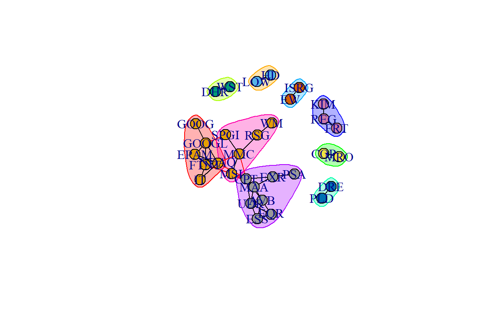

A closer look into the S&P 500 stocks
library(rvest)
url <- "https://www.slickcharts.com/sp500"
x<- read_html(url) %>% html_nodes("table") %>% html_table()
symbols <- x[[1]]$Symbol
symbols %>% head()%>% kable(caption = "Stock symbols")
| x |
|---|
| AAPL |
| MSFT |
| AMZN |
| TSLA |
| GOOGL |
| GOOG |
Slickcharts.com has a table with the full list of S and P 500 companies. To pull the stock symbols, I used the read_html fuction from the rvest package. Next I need to pull price data for each stock.
I plan to gather all sock prices for the last year using the tidyquant package.
data <- c()
close_data <- c()
symbols_names <- c()
symbols <- symbols[!symbols %in% c("BRK.B","CEG","BF.B","EMBC","PEG")]
symbols %>% length()
for (stock in symbols){
#print(stock)
stock_price <-tq_get(stock, get = "stock.prices", from = "2021-01-01", to = "2021-12-31")
close_data <- cbind(close_data,stock_price$close)
symbols_names <- rbind(symbols_names,stock)
}
saveRDS(close_data, file = "Stock_data.RDS")
saveRDS(symbols_names, file = "Symbol_names.RDS")
[1] 251 500close_data[1:5,1:10]
[,1] [,2] [,3] [,4] [,5] [,6] [,7] [,8]
[1,] 129.41 217.69 3186.63 729.77 1726.13 1728.24 349.50 131.1350
[2,] 131.01 217.90 3218.51 735.11 1740.05 1740.92 344.80 134.0475
[3,] 126.60 212.25 3138.38 755.98 1722.88 1735.29 359.27 126.1450
[4,] 130.92 218.29 3162.16 816.04 1774.34 1787.25 365.03 133.4400
[5,] 132.05 219.62 3182.70 880.02 1797.83 1807.21 363.39 132.7675
[,9] [,10]
[1,] 156.50 268.94
[2,] 158.34 270.97
[3,] 159.83 263.31
[4,] 160.37 268.74
[5,] 160.04 267.57The for loop above loops through all stock symbols that I pulled earlier. I noticed that as I looped through pulling the data from yahoo, that the following symbols did not work when pulling with the tq_get() function: “BRK.B”,“CEG”,“BF.B”,“EMBC”,“PEG”. I omitted these symbols, and the loop funciton was able to finish with out any more errors. I also then saved the object, so that I wouldn’t have to keep re-running this for loop.
As I looped through and pulled each stocks data, I added that data to a matrix as a column. Each column represents a stocks price data for the dates specified above. For this example, I only looked at the close price. The close data column has 500 variables, which means we have stock data for 500 stocks.
It looks like the data we currently have is missing the stock names, so I’ll have to re add these to the matrix.To make sure I was attaching the correct name to stock in the matrix, I created a vector named symbol names that added the stock to the vector every time I pulled the data from yahoo.
## renaming the columns
colnames(close_data)<- symbols_names
close_data <- data.frame(close_data)
close_data[1:10,1:10]
AAPL MSFT AMZN TSLA GOOGL GOOG UNH NVDA
1 129.41 217.69 3186.63 729.77 1726.13 1728.24 349.50 131.1350
2 131.01 217.90 3218.51 735.11 1740.05 1740.92 344.80 134.0475
3 126.60 212.25 3138.38 755.98 1722.88 1735.29 359.27 126.1450
4 130.92 218.29 3162.16 816.04 1774.34 1787.25 365.03 133.4400
5 132.05 219.62 3182.70 880.02 1797.83 1807.21 363.39 132.7675
6 128.98 217.49 3114.21 811.19 1756.29 1766.72 360.75 136.2150
7 128.80 214.93 3120.83 849.44 1737.43 1746.55 357.37 134.8475
8 130.89 216.34 3165.89 854.41 1747.25 1754.40 355.04 135.3175
9 128.91 213.02 3127.47 845.00 1730.92 1740.18 350.53 132.0025
10 127.14 212.65 3104.25 826.16 1727.62 1736.19 351.30 128.5950
JNJ FB
1 156.50 268.94
2 158.34 270.97
3 159.83 263.31
4 160.37 268.74
5 160.04 267.57
6 159.37 256.84
7 158.13 251.09
8 157.89 251.64
9 160.65 245.64
10 160.30 251.36We can now see that we have a data frame with the stock names on the appropriate columsn. Now I will need to create a network data set with this data. I will use the cor funciton to create a correlation matrix based on each stock.
| AAPL | MSFT | AMZN | TSLA | GOOGL | GOOG | UNH | NVDA | JNJ | FB | |
|---|---|---|---|---|---|---|---|---|---|---|
| AAPL | 1.0000000 | 0.8870806 | 0.6175751 | 0.6913052 | 0.7920204 | 0.7769435 | 0.7866560 | 0.8860761 | 0.3119568 | 0.5561364 |
| MSFT | 0.8870806 | 1.0000000 | 0.6402836 | 0.6750190 | 0.9552820 | 0.9443883 | 0.8752349 | 0.9619908 | 0.2462644 | 0.6928203 |
| AMZN | 0.6175751 | 0.6402836 | 1.0000000 | 0.3224856 | 0.6288011 | 0.6565958 | 0.5497846 | 0.6267292 | 0.2645278 | 0.6557263 |
| TSLA | 0.6913052 | 0.6750190 | 0.3224856 | 1.0000000 | 0.4678658 | 0.4308348 | 0.4979180 | 0.7472442 | -0.2174422 | 0.0275073 |
| GOOGL | 0.7920204 | 0.9552820 | 0.6288011 | 0.4678658 | 1.0000000 | 0.9971395 | 0.8589968 | 0.8821331 | 0.3504886 | 0.8331696 |
| GOOG | 0.7769435 | 0.9443883 | 0.6565958 | 0.4308348 | 0.9971395 | 1.0000000 | 0.8623970 | 0.8722996 | 0.3679844 | 0.8554034 |
| UNH | 0.7866560 | 0.8752349 | 0.5497846 | 0.4979180 | 0.8589968 | 0.8623970 | 1.0000000 | 0.8524150 | 0.3611373 | 0.6956164 |
| NVDA | 0.8860761 | 0.9619908 | 0.6267292 | 0.7472442 | 0.8821331 | 0.8722996 | 0.8524150 | 1.0000000 | 0.1286555 | 0.5920620 |
| JNJ | 0.3119568 | 0.2462644 | 0.2645278 | -0.2174422 | 0.3504886 | 0.3679844 | 0.3611373 | 0.1286555 | 1.0000000 | 0.5965237 |
| FB | 0.5561364 | 0.6928203 | 0.6557263 | 0.0275073 | 0.8331696 | 0.8554034 | 0.6956164 | 0.5920620 | 0.5965237 | 1.0000000 |
Since the matrix is so large I”m only showing the first 10 stocks. Lets see where the stocks correlation falls compared to each other. To do this, I will use the hist function. I will first set the diagonals to 0 since I don’t care about stocks being correlated to themselves.
There is definitely a skew to towards 1. Meaning most stocks are correlated. For my ties in my nextwork, I will look at only 5 percent of the population. To identify what I should set as my limit in correlation (specfically at 5%), I will use the quantile funciton.
quantile(as.numeric(cor_data), probs = c(.90,0.95,.98))
90% 95% 98%
0.8304499 0.8831460 0.9221825 To get ties for 5 percent of the population, I will use the metric of .88 as my slicer. I will now rename all corelations .88 or above to 1 and below to 0. A 1 represents a tie.
cor_small <-cor_data
## Specifying
cor_data[cor_data>=.89]<-1
cor_data[cor_data<.89]<-0
cor_data[1:10,1:10] %>% kable(caption = "Correlation Matrix")
| AAPL | MSFT | AMZN | TSLA | GOOGL | GOOG | UNH | NVDA | JNJ | FB | |
|---|---|---|---|---|---|---|---|---|---|---|
| AAPL | 0 | 0 | 0 | 0 | 0 | 0 | 0 | 0 | 0 | 0 |
| MSFT | 0 | 0 | 0 | 0 | 1 | 1 | 0 | 1 | 0 | 0 |
| AMZN | 0 | 0 | 0 | 0 | 0 | 0 | 0 | 0 | 0 | 0 |
| TSLA | 0 | 0 | 0 | 0 | 0 | 0 | 0 | 0 | 0 | 0 |
| GOOGL | 0 | 1 | 0 | 0 | 0 | 1 | 0 | 0 | 0 | 0 |
| GOOG | 0 | 1 | 0 | 0 | 1 | 0 | 0 | 0 | 0 | 0 |
| UNH | 0 | 0 | 0 | 0 | 0 | 0 | 0 | 0 | 0 | 0 |
| NVDA | 0 | 1 | 0 | 0 | 0 | 0 | 0 | 0 | 0 | 0 |
| JNJ | 0 | 0 | 0 | 0 | 0 | 0 | 0 | 0 | 0 | 0 |
| FB | 0 | 0 | 0 | 0 | 0 | 0 | 0 | 0 | 0 | 0 |
cor_small[cor_small >= .98] <- 1
cor_small[cor_small <.98] <- 0
Now we have a adjaceny matrix showing our ties for our network. If I were to create a network object now with this data, I would get a very large amount of stocks with out ties, and these would be seen as isolates. As these isolates will not be helpful in the analysis, I will now remove all isolates from the matrix before creating a network object.
correlated <- cor_data
x <- (colSums(correlated, na.rm = TRUE)) !=0
x[1:10] %>% kable(caption = "Stocks that have a TIE")
| x | |
|---|---|
| AAPL | TRUE |
| MSFT | TRUE |
| AMZN | FALSE |
| TSLA | FALSE |
| GOOGL | TRUE |
| GOOG | TRUE |
| UNH | TRUE |
| NVDA | TRUE |
| JNJ | FALSE |
| FB | TRUE |
correlated = correlated[x,x]
y <- (colSums(cor_small, na.rm = TRUE)) !=0
y[1:10] %>% kable(caption = "Stocks that have a TIE")
| x | |
|---|---|
| AAPL | FALSE |
| MSFT | FALSE |
| AMZN | FALSE |
| TSLA | FALSE |
| GOOGL | TRUE |
| GOOG | TRUE |
| UNH | FALSE |
| NVDA | FALSE |
| JNJ | FALSE |
| FB | FALSE |
[1] 334 334[1] 32 32network_igraph <- graph.adjacency(correlated, mode = "undirected", weighted = NULL)
plot(network_igraph, vertex.label = NA)
network_small <- graph.adjacency(cor_small, mode = "undirected", weighted = NULL)
plot(network_small, vertex.color = "skyblue3",vertex.label = NA, vertex.size = 20, layout = layout_with_fr)
as_edgelist(network_igraph)[1:10,]
[,1] [,2]
[1,] "AAPL" "PFE"
[2,] "AAPL" "COST"
[3,] "AAPL" "TMO"
[4,] "AAPL" "ACN"
[5,] "AAPL" "PLD"
[6,] "AAPL" "ZTS"
[7,] "AAPL" "SNPS"
[8,] "AAPL" "APH"
[9,] "AAPL" "CDNS"
[10,] "AAPL" "KEYS"as_edgelist(network_small)[1:10,]
[,1] [,2]
[1,] "GOOGL" "GOOG"
[2,] "GOOGL" "SPGI"
[3,] "GOOGL" "FTNT"
[4,] "GOOGL" "NDAQ"
[5,] "GOOGL" "EPAM"
[6,] "HD" "LOW"
[7,] "DHR" "WST"
[8,] "SPGI" "MMC"
[9,] "COP" "MRO"
[10,] "PLD" "DRE" I now have two network I graphs. One with 334 nodes and one with 32 nodes.
vcount(network_igraph)
[1] 334ecount(network_igraph)
[1] 5470vcount(network_small)
[1] 32ecount(network_small)
[1] 41is_bipartite(network_igraph)
[1] FALSEis_directed(network_igraph)
[1] FALSEis_weighted(network_igraph)
[1] FALSEvertex_attr_names(network_igraph)
[1] "name"edge_attr_names(network_igraph)
character(0)V(network_igraph)$name[1:10]
[1] "AAPL" "MSFT" "GOOGL" "GOOG" "UNH" "NVDA" "FB" "PG"
[9] "JPM" "XOM" The large network has many more ties then the small network. I checked to see if the object is a bipartite, directed or weighted. As expected, the network is single mode, undirected and unweighted. The network seems like it was set up correctly!
large.fg <- cluster_fast_greedy(network_igraph)
small.fg <- cluster_fast_greedy(network_small)
names(small.fg)
[1] "merges" "modularity" "membership" "names" "algorithm"
[6] "vcount" small.fg
IGRAPH clustering fast greedy, groups: 9, mod: 0.57
+ groups:
$`1`
[1] "PSA" "MSI" "AVB" "EQR" "EXR" "MAA" "ESS" "UDR" "CPT"
$`2`
[1] "SPGI" "MMC" "WM" "RSG"
$`3`
[1] "GOOGL" "GOOG" "FTNT" "IT" "NDAQ" "EPAM"
$`4`
+ ... omitted several groups/verticesigraph::groups(large.fg)[1:2]
$`1`
[1] "MSFT" "GOOGL" "GOOG" "FB" "COST" "PEP" "LLY" "ACN"
[9] "ADBE" "DHR" "SPGI" "INTU" "PLD" "MS" "AMT" "TGT"
[17] "ISRG" "MMC" "ZTS" "EW" "REGN" "EQIX" "HCA" "EL"
[25] "PSA" "CHTR" "SHW" "ETN" "MCO" "MRNA" "ROP" "ORLY"
[33] "PAYX" "FTNT" "CMG" "WELL" "IDXX" "SBAC" "MSI" "KR"
[41] "MSCI" "A" "CTAS" "CARR" "YUM" "AVB" "RMD" "EBAY"
[49] "TROW" "OTIS" "ROK" "MTD" "AWK" "ARE" "EXR" "RSG"
[57] "ALGN" "WST" "LH" "CPRT" "IT" "STE" "EFX" "MAA"
[65] "CDW" "ULTA" "ZBRA" "DOV" "PKI" "NDAQ" "WAT" "BR"
[73] "UDR" "CPT" "TRMB" "POOL" "GRMN" "DGX" "EPAM" "TECH"
[81] "XYL" "GNRC" "CRL" "DPZ" "CBOE" "BIO" "SEE" "PNR"
$`2`
[1] "AAPL" "UNH" "NVDA" "PG" "HD" "PFE" "AVGO" "TMO" "MCD"
[10] "CRM" "LIN" "NEE" "AMD" "LOW" "CVS" "NOW" "ADP" "ADI"
[19] "ICE" "F" "ITW" "KLAC" "MCK" "EXC" "AZO" "DXCM" "SNPS"
[28] "APH" "CDNS" "TEL" "VRSK" "FAST" "AME" "KEYS" "ANET" "ODFL"
[37] "TSCO" "ALB" "VMC" "MLM" "DRE" "GWW" "VRSN" "MOH" "IR"
[46] "MPWR" "WAB" "STX" "FDS" "CTLT" "BRO" "TYL" "IEX" "PAYC"
[55] "NDSN" "JNPR" "PHM" "WHR" "FBHS" "AOS" "CDAY"igraph::groups(small.fg)[1:2]
$`1`
[1] "PSA" "MSI" "AVB" "EQR" "EXR" "MAA" "ESS" "UDR" "CPT"
$`2`
[1] "SPGI" "MMC" "WM" "RSG" When looking at the large network, most stocks are in the 1st group. Surprisingly APPL is not included with google and microsoft, when I would have assumed those to be highly correlated together.
membership(small.fg)
GOOGL GOOG HD DHR SPGI LOW COP PLD ISRG MMC EW
3 3 6 9 2 6 5 8 7 2 7
PSA WM FTNT MSI AVB EQR EXR RSG WST IT MAA
1 2 3 1 1 1 1 2 9 3 1
ESS DRE MRO NDAQ UDR CPT EPAM KIM REG FRT
1 8 5 3 1 1 3 4 4 4 I removed the vertex labels from the large igraph object since there are so many stocks in that group.
large.wt <- walktrap.community(network_igraph)
small.wt <- walktrap.community(network_small)
groups(large.wt)[1:5]
$`1`
[1] "NOW" "CTLT" "TYL"
$`2`
[1] "EOG" "WMB"
$`3`
[1] "JPM" "USB" "MET" "CE" "MGM" "L" "LNC"
$`4`
[1] "SLB" "HES"
$`5`
[1] "UNH" "WFC" "ANTM" "SCHW" "CB" "AON" "F" "GD" "AIG"
[10] "SPG" "AJG" "DVN" "BK" "AMP" "OKE" "SIVB" "CBRE" "FRC"
[19] "STT" "MLM" "RJF" "PFG" "PWR" "SBNY" "KIM" "JBHT" "AAP"
[28] "LKQ" "RHI" "REG" groups(small.wt)[1:5]
$`1`
[1] "MMC" "PSA" "MSI" "AVB" "EQR" "EXR" "MAA" "ESS" "UDR" "CPT"
$`2`
[1] "GOOGL" "GOOG" "SPGI" "FTNT" "IT" "NDAQ" "EPAM"
$`3`
[1] "WM" "RSG"
$`4`
[1] "KIM" "REG" "FRT"
$`5`
[1] "ISRG" "EW" plot(large.wt, network_igraph, vertex.label = NA)
plot(small.wt, network_small)

##10 steps
large.wt.10 <- walktrap.community(network_igraph,steps = 10)
small.wt.10 <- walktrap.community(network_small, steps = 10)
##100 steps
large.wt.100 <- walktrap.community(network_igraph,steps = 100)
small.wt.100 <- walktrap.community(network_small, steps = 100)
## Plots
plot(large.wt.10, network_igraph, vertex.label = NA)
plot(large.wt.100, network_igraph, vertex.label = NA)
plot(small.wt.10, network_small)
plot(small.wt.100, network_small)

large.ed <- label.propagation.community(network_igraph)
small.ed <- label.propagation.community(network_small)
plot(large.ed, network_igraph,vertex.label = NA)
plot(small.ed, network_small)

large.eig<- leading.eigenvector.community(network_igraph)
small.egi <- leading.eigenvector.community(network_small)
plot(large.eig,network_igraph, vertex.label = NA)
plot(small.egi, network_small)

Text and figures are licensed under Creative Commons Attribution CC BY-NC 4.0. The figures that have been reused from other sources don't fall under this license and can be recognized by a note in their caption: "Figure from ...".
For attribution, please cite this work as
Sullivan (2022, May 11). Data Analytics and Computational Social Science: Clustering Stocks. Retrieved from https://pjsulliv34.github.io/Blog/posts/2022-04-24-clustering-stocks/
BibTeX citation
@misc{sullivan2022clustering,
author = {Sullivan, Peter},
title = {Data Analytics and Computational Social Science: Clustering Stocks},
url = {https://pjsulliv34.github.io/Blog/posts/2022-04-24-clustering-stocks/},
year = {2022}
}